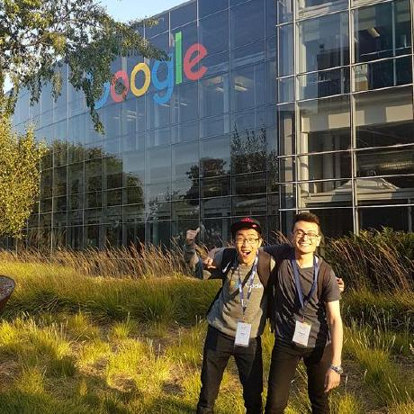

Justin Mah
BSc Computer Science
University of Alberta
Hello world! I am in my last year of CS at the University of Alberta, expected to graduate June 2021. I formerly interned as a SWE at Microsoft and Google. I have a passion for teaching and have been a teaching assistant for several classes at the University of Alberta.
Experience
- Google Software Engineer Intern (x2)
- Worked on PeopleAPI
- Worked on Google Play Store (Android)
- Microsoft Software Engineer Intern
- Developed an Android app "Read My World" in Microsoft Vancouver, as part of the Microsoft Garage program
- CMPUT 301 Teaching Assistant
- Lead and assist three hour lab sessions, teaching students Java and Android software development
- Mentor two teams of six students for their term projects. The project entails developing a fully functional Android app with specific requirements from a make-believe client
- CMPUT 174 Teaching Assistant
- Assist students in two 3-hour lab sessions and assess the group projects they work on during lab time
- Help students get familiar with beginner programming concepts, problem solving in Python, and creating games using the pygame library
- JAPAN 101 Teaching Assistant
- Assisted students in their four 2.5-hour classes a week in acquiring beginner Japanese skills by supervising in-class activities and conversations while constantly providing feedback
- Helped students properly incorporate newly learned vocabulary and grammar into their conversations
What I have to offer
With my previous software engineering internships alongside my teaching experience, I can provide exceptional software engineering and communication skills to your team. I have previous experience in C, C++, Java, Kotlin, Python, HTML, CSS, JavaScript, etc., and can be a valuable contributor in many areas of software development (front-end, back-end, mobile, etc.).
Important points
- Strong communication skills, from teaching and internship experience
- Possess leadership abilities, from teaching and group project experience
- Native English skills
- Advanced Japanese skills
- Intermediate Chinese skills
- Beginner Korean skills